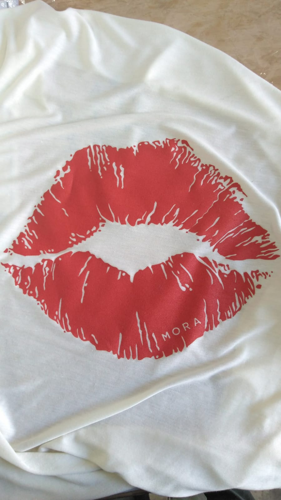
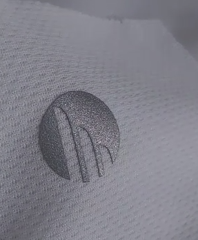

cuatricromia
La impresión en cuatricromía es una técnica que permite imprimir
una imagen en color. Actualmente es el sistema estándar para la
impresión offset y digital y, por tanto, es el más utilizado en
todo el mundo. Esta técnica de impresión se denomina
cuatricromía porque se basa en el uso de cuatro colores, los
llamados colores CMYK, como veremos a continuación: cian,
magenta, amarillo y negro. Mediante el uso de estos colores, ¡se
puede reproducir en papel casi el 70 % de los colores visibles
por el ojo humano!
tricromía
Se conoce por tricromía al procedimiento fotográfico de reproducción de todos los colores mediante la estampación sucesiva del rojo, verde y azul para mezclas aditivas y cian, magenta y amarillo para las mezclas sustractivas La primera fotografía en color permanente fue tomada en 1861
Serigrafía

La serigrafía es una técnica artística de reproducción de imágenes. Esta consiste en pasar tinta a través de una malla montada en bastidores con un diseño concreto. La serigrafía es ideal para realizar y, sobre todo, reproducir múltiples obras de arte.
Sublimacion
La sublimación textil es la técnica de estampación con la que podemos reproducir cualquier tipo de diseño sin limitaciones de colores sobre prendas blancas de poliéster. Desde fotografías a degradados, sombras o ilustraciones a todo color, ¡nada se nos escapa!
Estampado transfer

Utilizando la máquina de transfer para estampado logramos adherir a las prendas marcas un leve relieve y una calidad muy elevada. A diferencia de la pintura para sublimar esta técnica sirve para pequeños detalles que duran mucho mas tiempo ya que no se desgasta con lavados ni planchados. La contra que presenta es que es un trabajo más "artesanal" y lleva mayor tiempo de producción